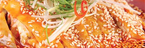
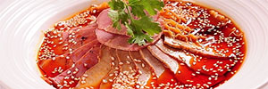
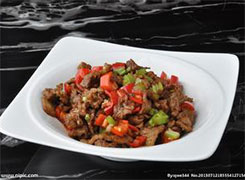

关于我们
品牌文化
新闻中心
经典食材
联系我们
中国饮食文化
中国饮食文化源远流长，现在普遍承认的有八大菜系鲁菜、川菜、粤菜和苏菜，闽菜、浙菜、湘菜、徽菜。
川菜口水鸡
川菜夫妻肺片


我国的菜系，是指在一定区域内，由于气候、地理、历史、物产及饮食风俗的不同，经过漫长历史演变而形成的一整套自成体系的烹饪技艺和风味。
我国的菜系，是指在一定区域内，由于气候、地理、历史、物产及饮食风俗的不同，经过漫长历史演变而形成的一整套自成体系的烹饪技艺和风味。
